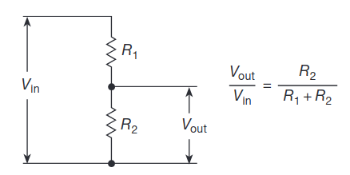

Created at: 2025-01-28
Also called "de-amplifiers", voltage dividers are one of the most widespread circuit fragments, they are everywhere.
A circuit that given a certain voltage input, produces a predictable fraction of the input voltage as the output voltage. The output voltage is always lower than the input voltage.

Vout/Vin = R2 / (R1 + R2)
or:
Vout = (R2 * Vin) / (R1 + R2)
An adjustable voltage divider can be created from using a potentiometer to control Vout. However, in modern circuits you'll instead see a long series chain of equal-value resistors, with an arrangement of electronic switches that lets you choose any on the junctions as the output. This sounds more complicated but allows you to adjust the voltage ratio electrically rather than mechanically.